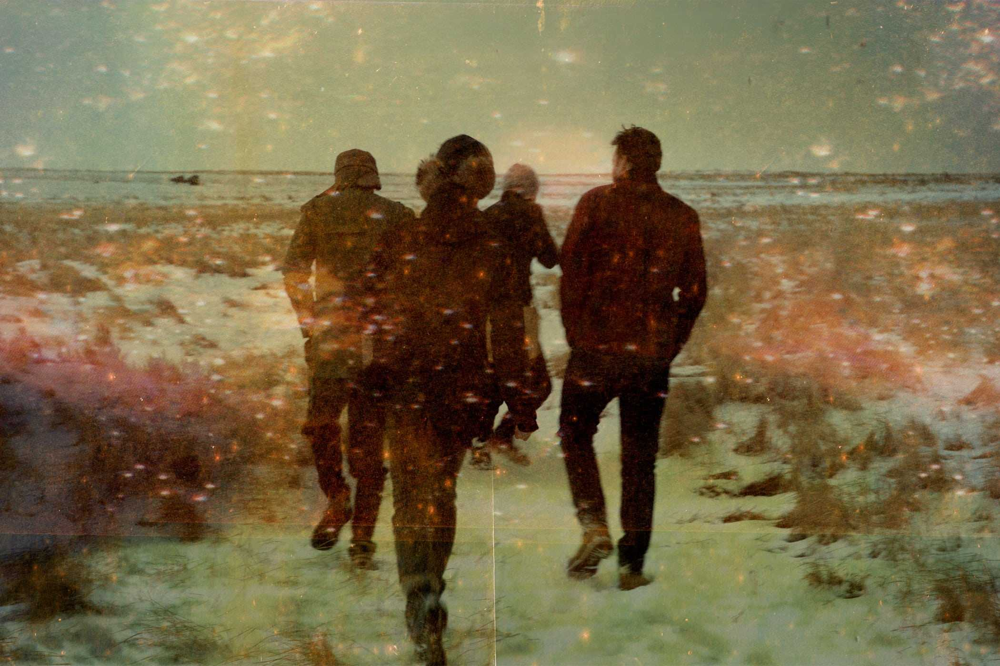
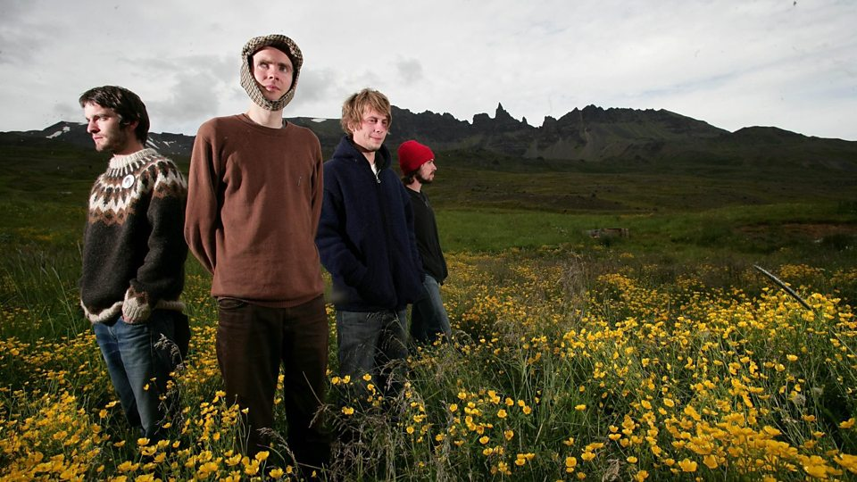

History of Sigur Ros
Jón Þór "Jónsi" Birgisson (guitar and vocals), Georg Hólm (bass) and
Ágúst Ævar Gunnarsson (drums) formed the group in Reykjavík in January 1994.
The band's name means Victory Rose. They took their name from Jónsi's
younger sister Sigurrós, who was born a few days before the band was formed.
International acclaim came with 1999's Ágætis byrjun ("A Good Beginning").
The album's reputation spread by word of mouth over the following two years.
Soon critics worldwide were praising it effusively, and the band
was playing support to established acts such as Radiohead.

